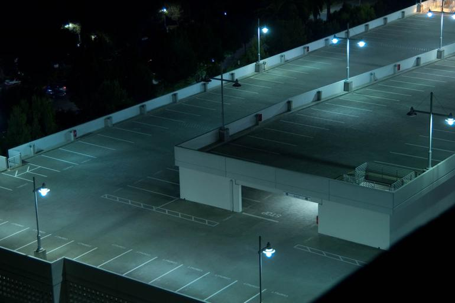
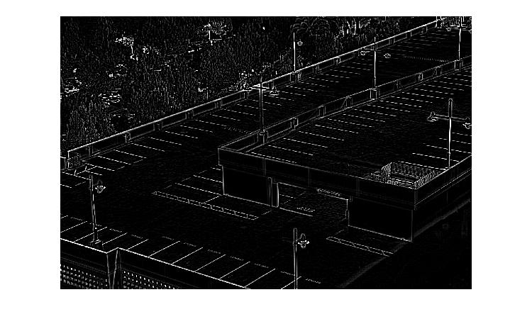
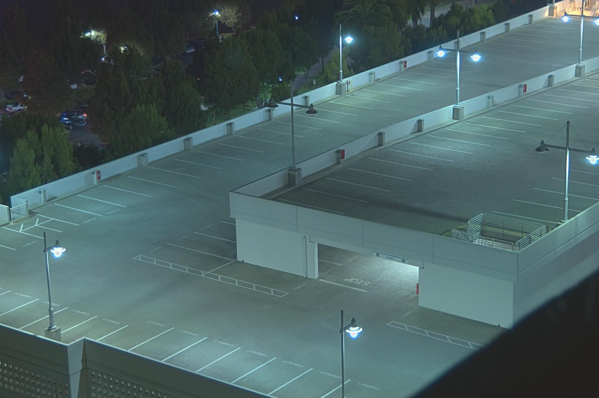
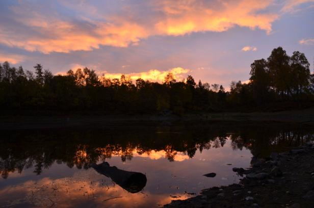
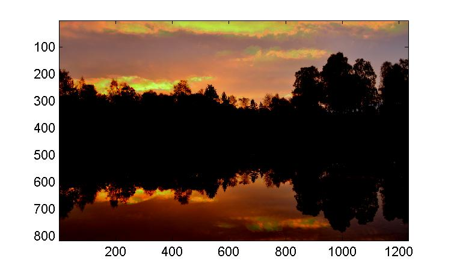

High Dynamic Range
Project Overview
Often times, photographers wish to capture and portray scenes in the real world which have high dynamic range. Modern cameras, however, are unable to capture this range: these devices struggle to map this range to one of 256 intensity values in each color channel. This means that in some scenes, even the best photographs will be partially over- or under-exposed.
One solution for photographers is to take multiple exposures of the same scene by varying the shutter speed. These exposures will vary in the parts which are optimally exposed, and can be combined together to form a single result which better reflects the high-dynamic-range scene. This project is about recovering the radiance map from multiple exposures and using tone mapping to create the final, displayable result.
Back to TopAlgorithm
The algorithm can be broken down into two major parts:
Recovering the radiance map. The focus here is on taking the exposure values from each of the individual images, translating these curves, and recovering a single, smooth curve which represents the radiance map of the image. This radiance map, however, is still not displayable by current devices.
Tone mapping. The focus here is on taking the radiance map and mapping it to intensity values between 0 and 256 in order to create an image that can be displayed.
Recovering the Radiance Map
The value of the \(i\)th pixel in the \(j\)th exposure is a function of (unknown) irradiances and (known) exposure times. In equation form: $$Z_{ij} = f(E_{i} \Delta t_{j})$$ In practice, it is easier to define a camera response function \(g = \ln f^{-1}\) and to solve for the following equation instead, which will be useful in recovering the radiance map: $$g(Z_{ij}) = \ln(f^{-1}(Z_{ij})) = \ln(E_{i}) + \ln(\Delta t_{j})$$
Image Sampling
We begin by reading in all of the images in the directory and recording the log of the associated exposure times. One initial tradeoff we must make is the number of pixels to use in our sample: we want to ensure we have enough pixels to broadly cover the entire range of pixel values, but also want to minimize the sample size to improve performance. Let \(N\) represent the number of pixels we will sample, \(P\) be the number of exposures (images) we have to work with, and \(Z_{min}\) and \(Z_{max}\) represent the minimum and maximum pixel values in our image. Then, we use the constraint specified by Debevec 1997 to determine the number of sample points we need: $$N(P-1) \gt Z_{max} - Z_{min} \Rightarrow N = 2 \lceil \frac{(Z_{max} - Z_{min})}{P-1} \rceil$$ The same pixels in the sample are selected from each exposure, and are used to help solve for the camera response.
Computing Weights
We expect the camera response to fit the data more poorly at the extremes, so it is important to emphasize the fitting on the center part of the curve. As such, we use a simple weighting scheme which peaks at the midpoint pixel value. $$ w(z) = \begin{cases} z - Z_{min} & z \leq \frac{1}{2}(Z_{max} - Z_{min}) \\ Z_{max} - z & z \gt \frac{1}{2}(Z_{max} - Z_{min}) \end{cases} $$
Compute the Camera Response
Using these components, we can solve for the camera response. Because this is an overdetermined system, we wish to minimize the following objective function, which consists of a fitting term (left component) and a smoothing term (right component): $$ O = \sum_{i=1}^{N} \sum_{j=1}^{P} {w(Z_{ij}) [g(Z_{ij} - \ln E_{i} - \ln \Delta t_{j})]}^{2} + \lambda \sum_{z=Z_{min}+1}^{Z_{max}-1}[w(z) g''(z)]^{2}$$ This can be done using the gsolve.m provided in the Debevec 1997 paper.
Compute the HDR Radiance Map
Once we have this information, we can finally compute the radiance map. The equation we follow for the log of the radiance is as follows: $$\ln E_{i} = \frac{\sum_{j=1}^{P} w(Z_{ij})[g(Z_{ij} - \ln \Delta t_{j})]}{\sum_{j=1}^{P} w_(Z_{ij})}$$
Tone Mapping
We toyed with three different schemes for tone mapping in order to form a comparison: a linear tone map, a global tone map (as proposed in Reinhard 2002), and a bilateral filtering-based tone map (as proposed in Durand 2002). In general, Durand's method produced the most realistic results and was consistently successful, while the linear tone map, as expected, produced generally poor results.
We detail the methodology used below.
Linear Tone Map
We begin by recovering the luminance map from the HDR radiance map computed in the previous part. We used a standard equation for the sRGB scheme: $$ L = 0.2126 R + 0.7152 G + 0.0722 B $$ Given the luminance map, we simply rescale the luminances as a fraction of the maximum luminance value and plot this. Predictability, this generally results in very dark images overall.
Global Tone Map
This tone mapping algorithm takes in a parameter \(a\), which affects the brightness in the result. Values of 0.18, 0.36, 0.72, etc. are good for brighter images, while values such as 0.09, 0.045, etc. are better for darker images.
We begin by computing the key of the image, which roughly maps to the keys used by traditional photographers. Let \(L_{w}\) represent the luminance map recovered from the HDR radiance map. Then the key of the image is computed as follows: $$ \bar L_{w} = \frac{1}{N} \exp {(\sum_{x,y} \log[\delta + L_{w}(x, y)])} $$ We can then use this key value to scale our luminance map as follows: $$ L(x, y) = \frac{a}{\bar L_{w}} L_{w} (x, y) $$ This scaled luminance can then be used to compute the final, displayable luminance value. Such a mapping allows us to create a non-linear mapping which compresses primarily the high luminances in the image. $$ L_{d}(x, y) = \frac{L(x, y)}{1 + L(x, y)} $$ This method tended to produce far better results, although the colors would sometimes look a little too intense or dark to be realistic. It also didn't work as well when there were very large contrasts in luminance.
Bilateral Filtering
This tone mapping scheme was more involving and required two input parameters: (1) a \(dR\) parameter to govern the dynamic range stops (this ranges from 2 to 8; values of 4 or 5 tended to work well) and (2) \(\gamma\), a parameter to use in gamma compression to adjust the intensity of the result.
We began by computing the average intensity \(I\) of the color channels, which was used to compute the chrominance channels \(\frac{R}{I}, \frac{G}{I}, \frac{B}{I}\) respectively. We then computed the log intensity \(L = \log_{2}(I)\) which is filtered by the bilateral filter to create result \(B\).
The bilateral filter is a filter whcih consists of two components: (1) a filter for the spatial domain (which operates on the basis of geometric distance between two pixels) and (2) a filter for the intensity domain (which operates on the basis of the distance between the intensities of the pixels). The result is a filter which is able to preserve edge boundaries and eliminate the halo effects of algorithms proposed prior to Durand's 2002 publication. To speed up the computation, we use a window \(\xi\) to sample neighboring values from. Let \(I\) be the image we are sampling from. The formula we thus implement for the value at pixel \(x\) is given as follows: $$ B(x) = \frac{1}{k(x)} \sum_{p \in \xi} c(x, p) s(x, p) I(p) $$ The Gaussian for the spatial domain takes the following equation: $$ c(x, p) = \exp {\{-\frac{1}{2} (\frac{|x-p|}{\sigma_{d}})^{2}\}} $$ Similarly, the Gaussian for the intensity domain takes the following equation; notice that we are interested in the difference in intensities rather than location: $$ s(x, p) = \exp {\{-\frac{1}{2} (\frac{|I(x)-I(p)|}{\sigma_{r}})^{2}\}} $$ Finally, we have a normalization factor as follows: $$k(x) = \sum_{p \in \xi} c(x, p) s(x, p) $$
Using this filter, we can separate out the detail layer of the image from base with the equation \(D = L - B\). From this, we can thus rescale and offset our base image as follows: $$ o = \max(B) $$ $$ s = \frac{dR}{\max(B) - \min(B)} $$ $$ B' = \frac{B - o}{s} $$ From this, we can finally reconstruct the log intensity of the image: $$ O = 2^{B' + D} $$ Using this, we can finally compute the results per channel and apply gamma compression to get the final result: $$ R' = (O \times \frac{R}{I})^{\gamma} $$ $$ G' = (O \times \frac{G}{I})^{\gamma} $$ $$ B' = (O \times \frac{B}{I})^{\gamma} $$
Results
We have included four results, two of which are sample images downloaded from Brown University's assignment page, and two of which are our own images.
Result 1: Station
This was one of the sample image sets. In this case, the colors in the global tone map were more vivid, although the bilinear filtering method was able to produce a tone map which recovered more of the dynamic range of the image.
| Input Images | ||
 |
||
| Exposure Time: 0.0016 s | Exposure Time: 0.0063 s | Exposure Time: 0.0250 s |
| Camera Response | Radiance Map | Detail Layer | Intensity Map |
 |
| Result: Linear Tone Map (Baseline) | Result: Global Tone Map (Reinhard 2002) | Result: Bilateral Filter Tone Map (Durand 2002) |
Result 2: Garage
This was another one of the sample image sets. In this case, the global tone map produced a reasonable result, although the trees in the background remained very dark. The bilateral-filtered result was able to accentuate the trees far better.
| Input Images | |||
|  | |||
| Exposure Time: 1.5 s | Exposure Time: 2.0 s | Exposure Time: 3.0 s | Exposure Time: 4.0 s |
| Exposure Time: 6.0 s | Exposure Time: 8.0 s | Exposure Time: 10.0 s | Exposure Time: 15.0 s |
| Exposure Time: 20.0 s | Exposure Time: 30.0 s | ||
| Camera Response | Radiance Map | Detail Layer | Intensity Map |
|  |
| Result: Linear Tone Map (Baseline) | Result: Global Tone Map (Reinhard 2002) | Result: Bilateral Filter Tone Map (Durand 2002) |
|  |
Result 3: Aviemore Loch
(Bells and Whistles) We shot these photos ourselves in November 2013 at Loch Puladdern in the Craigellachie Nature Preserve in Aviemore, Scotland. It was a beautiful sunrise in Cairngorms National Park, and being outside the peak tourist season, the only other people there were the University of Edinburgh students on the trip with me.
| Input Images | ||
|  | ||
| Exposure Time: 0.2500 s | Exposure Time: 0.4000 s | Exposure Time: 0.7692 s |
| Camera Response | Radiance Map | Detail Layer | Intensity Map |
| Result: Linear Tone Map (Baseline) | Result: Global Tone Map (Reinhard 2002) | Result: Bilateral Filter Tone Map (Durand 2002) |
 |
Result 4: Aviemore Loch (Take 2!)
(Bells and Whistles) Another set of photos we shot on the same morning. These photos were taken at Loch Puladdern in the Craigellachie Nature Preserve in Aviemore, Scotland. Sunrises are magical, and as some Scottish photoraphers put it, "There's absolutely nothing like Scottish light".
| Input Images | |||
| Exposure Time: 0.2000 s | Exposure Time: 0.3333 s | Exposure Time: 0.6250 s | Exposure Time: 1.0000 s |
| Camera Response | Radiance Map | Detail Layer | Intensity Map |
|  |
| Result: Linear Tone Map (Baseline) | Result: Global Tone Map (Reinhard 2002) | Result: Bilateral Filter Tone Map (Durand 2002) |
References
This turned out to be a fairly involving project which included many references, which we've listed below:
- Bilateral Filtering for Gray and Color Images (Tomasi, IEEE 1998)
- Brown University CS129 Lecture 17: Recovering High Dynamic Range
- Brown University CS129 Lecture 18: Tone Mapping
- Fast Bilateral Filtering for HDR Display (Durand, SIGGRAPH 2002)
- Gradient Domain High Dynamic Range Compression (Fattal, SIGGRAPH 2002)
- Photographic Tone Reproduction for Digital Images (Reinhard, SIGGRAPH 2002)
- Recovering High Dynamic Range Radiance Maps from Photographs (Debevec, SIGGRAPH 1997)
- Stack Overflow: Formula to Determine Brightness of RGB Color
- University of Edinburgh: Bilateral Filtering for Gray and Color Images
- Wikipedia: Relative Luminance
Akshay Narayan and Japheth Wong ★ CS194-26 ★ Final Project ★ Top
Fake Miniatures
Project Overview
This project involved creating the Tilt Shift effect automatically. This cool effect makes it seem like the subject of a photo is a miniature model, since other parts of the photo are blurred out. The following picture of an actual miniature (taken by me at Legoland) shows this effect.
As you can see, while the subject is in focus, parts of the image at other depths are not. This project seeks to fake this effect on non-miniature photographs. This is done by selecting a focus line and a depth of field around the focus line that will remain sharp, then progressively blurring the image using a gaussian filter as you move away from the focus line. This approach has limitations, however; if the object you wish to focus on is very tall, then while it would be in focus in an actual tilt shift photograph since all of the object is at the same depth, this approach can lead to parts of the object at the same depth ending up at different levels of sharpness. Therefore, as seen below in some of the pictures in the results section, this approach works best with images that are laid out such that horizontal strips of the image correspond to levels of depth.
Results
| Original Image | Fake Miniature Image |
 |
|
 |
 |
 |
|
 |
 |
 |
|
 |
All pictures above were taken by me except the following.
- Castle: wayman72 on flickr
- Village: Bernard Fourmond on flickr
- Airport: David Brown on flickr
- Coastal Town: From project spec
Akshay Narayan and Japheth Wong ★ CS194-26 ★ Final Project ★ Top
Vertigo Shots
Project Overview
The "Vertigo Shot" or "Dolly Zoom" effect, an example of which can be seen here, is an interesting effect in which a subject of a photo stays the same size while the background morphs around it throughout a series of photographs or a movie clip.
This effect is created by moving the camera away from the subject while also increasing the zoom level such that the subject appears the same size. The zooming results in a warping effect on the background of the photograph. Since the background is warping while the subject stays the same, the resulting photo sequence can look pretty cool, as seen below.


Bells and Whistles
It is easier to see this effect as an animation. To this end, we have compiled the Vertigo Effect pictures into animated gifs. As can be seen, it is quite hard to perfectly align the subject of the photo so that it is completely constant throughout the frames of the animation.